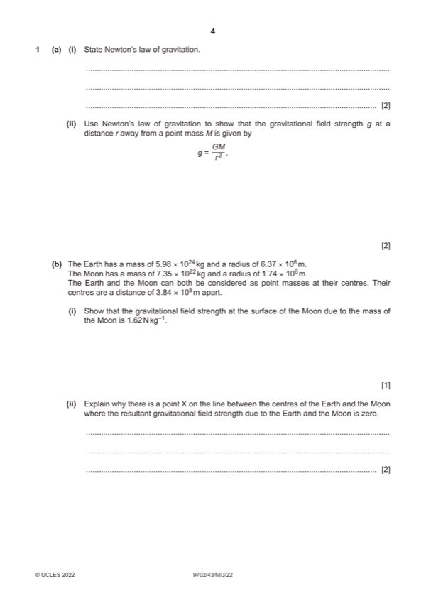

Question 1

Original paper page 4
Part 1(a)(i) — solution
- [B1] Obtain/use: (gravitational) force is (directly) proportional to product of masses
- [B1] Obtain/use: force (between point masses) is inversely proportional to the square of their separation
Mark points
- [B1] Obtain/use: (gravitational) force is (directly) proportional to product of masses
- [B1] Obtain/use: force (between point masses) is inversely proportional to the square of their separation
Part 1(a)(ii) — solution
- [A1] Obtain/use: F = GMm / r2
Mark points
- [A1] Obtain/use: F = GMm / r2
Part 1(b)(i) — solution
- [A1] Obtain/use: g = (6.67 10–11 7.35 1022) / (1.74 106)2 = 1.62 N kg–1
Mark points
- [A1] Obtain/use: g = (6.67 10–11 7.35 1022) / (1.74 106)2 = 1.62 N kg–1
Part 1(b)(ii) — solution
- [B1] Obtain/use: fields (due to Earth and the Moon) have equal magnitudes
- [B1] Obtain/use: fields (due to Earth and the Moon) are in opposite directions
Mark points
- [B1] Obtain/use: fields (due to Earth and the Moon) have equal magnitudes
- [B1] Obtain/use: fields (due to Earth and the Moon) are in opposite directions
Part 1(b)(iii) — solution
- [A1] Obtain/use: x = 3.8 107 m
Mark points
- [A1] Obtain/use: x = 3.8 107 m